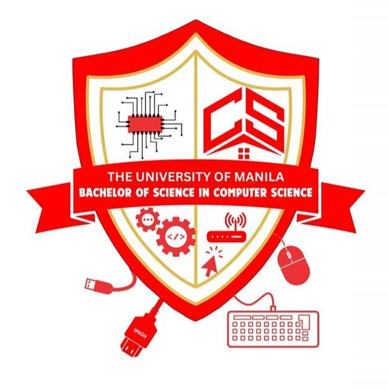
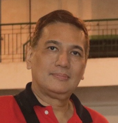
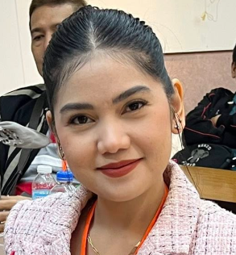
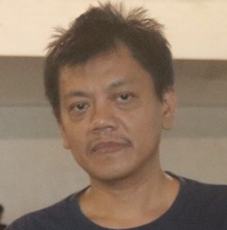
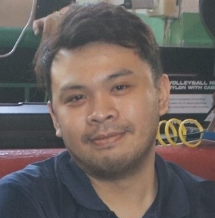
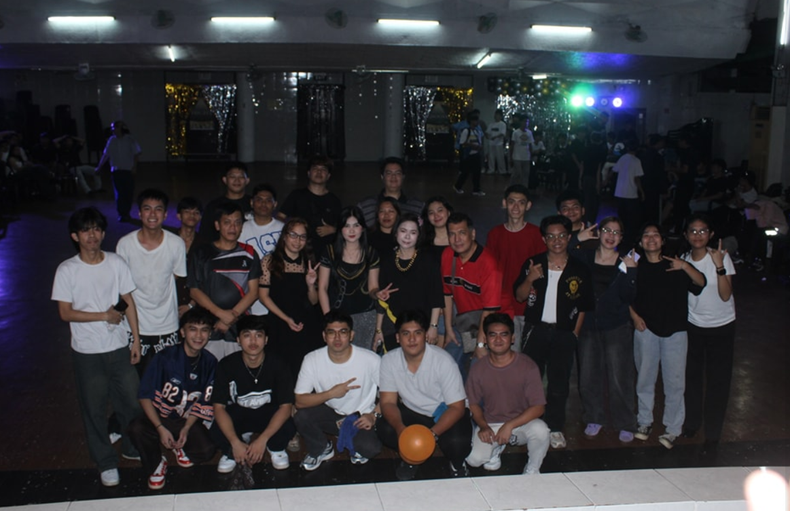
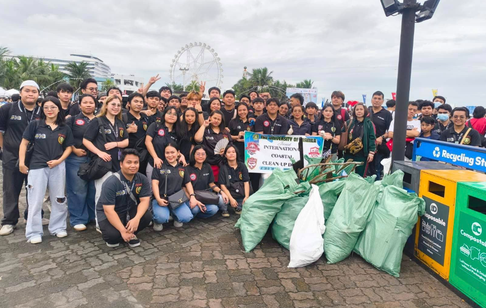
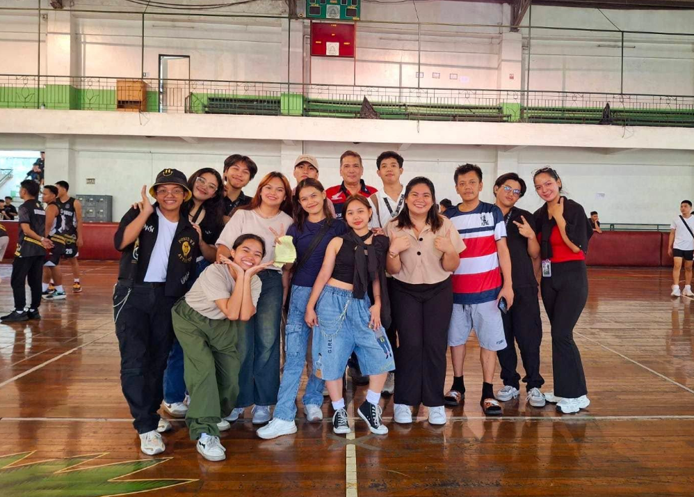

The University of Manila
Department of Computer Science

Department of Computer Science
The Department of Computer Science aims to develop competent, innovative, and ethically responsible computing professionals who can contribute to technological advancement and nation-building through problem-solving, research, and software development excellence.
To be a leading center of excellence in Computer Science education, producing globally competitive graduates equipped with strong analytical skills, creativity, and a passion for innovation in the digital era.
Code with purpose. Innovate with integrity. Lead with knowledge.
The Department of Computer Science at the University of Manila was established to prepare students for the rapidly evolving world of technology. It began as a small program focused on basic computing and programming principles, and has since grown into a full-fledged department producing skilled developers, analysts, and innovators.
Over the years, the department has adapted to modern technologies such as web development, artificial intelligence, and data science, continuously shaping students to become future-ready professionals in the tech industry.

Prof. Joselito Borces
Prof. Marjorie Borces

Prof. Rochelle Fallorina

Prof. Rogelio Plaza

Prof. Ervin Ramos
Prof. Stanley Verde

To welcome the freshmen, the Department threw a party get to know each and have each batch grow closer.

Students and faculty worked together in a community clean-up drive, promoting environmental awareness and responsibility. The activity encouraged teamwork while making a positive impact on the surroundings.

The annual sportfest brought students together through friendly competition, showcasing teamwork, sportsmanship, and school spirit across various athletic events and games.